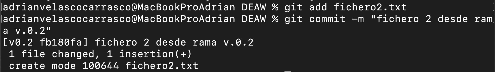

Práctica 5 .- Ejercicios Github
Primera parte .- Repositorio DEAW
Lo primero que debemos de hacer es crear el repositorio DEAW si aún no lo tenemos creado:
Seguimos clonandolo en nuestro repositorio local de la siguiente manera:

Segunda parte .- README
Ahora, debemos de generar el README para nuestro repositorio. Para ello haremos lo siguiente:

Seguiremos, haciendo un git add README.md para que podamos hacerle el commit al archivo y despues realizar el push del mismo.

Tercera parte .- Commit al archivo README.md
Y hacemos un commit del archivo.
Cuarta parte .- Push del archivo README.md
Y finalmente el push.

Quinta parte .- Ignoración de archivos mediante el archivo ".gitignore"
Lo primero que debemos hacer en este paso es generar un fichero privado.txt
Tras la creación de este archivo, generaremos el directorio /privada

Y para que no los tenga en cuenta git, debemos de generar un archivo .gitignore para que ignore tanto el archivo privado.txt y el directorio /privada
Sexta parte .- Crear el fichero 1.txt y agregarlo al repositorio local
Se creará y agregará de la siguente manera:

Séptima parte .- Crear el tag v0.1
Lo creamos usando el comando git tag

Octava parte .- Subir el tag v0.1

Novena parte .- Cuenta de github
Deberemos de agregarle a la cuenta de github una foto (si no la tenemos agregada ya)
También, activar la protección doble factor en la cuenta de github, para ello:
1.- Deberemos de irnos a la configuración de nuestro perfil y encontrar " Two-factor authentication"

2.- Tras eso, deberemos de seguir los pasos que nos diga la web. El primero es descargarnos la app móvil y darle permiso desde el teléfono.

3.- El siguiente paso sería escanear un QR en el que agregaremos a nuestro teléfono el Two-factor authentication y nos dará un código cada vez que queramos acceder a nuestra cuenta. (no pongo captura por seguridad)
4.- El siguiente paso, nos mostrará una serie de códigos de recuperacion que deberemos de guardar en un lugar seguro. Descargaremos y proseguimos.
5.- Ya estaríai activado la protección doble factor en nuestra cuenta de github.
Décima parte .- Uso social de Github
Deberemos de seguir a dos compañeros de clase en su cuenta de github
Cuando lo tengamos, deberemos de seguir los repositorios de nuestros compañeros y hacerle un star
Undécima parte .- Crear una tabla mencionando a nuestros compañeros
Para ello, en nuestro README.md, crearemos una tabla en la que mostraremos el nombre y un enlace para poder ir a su repositorio.

Duodécima parte .- Creación de una rama
A continuación, deberemos de crearnos una rama con nombre v0.2 y posicionarnos en ella.

Decimotercera parte .- Añadir un fichero a la rama v0.2
Ahora, deberemos de crear un fichero 2.txt y lo añadiremos a la rama v0.2

Decimocuarta parte .- Merge directo
Ahora, deberemos de posicionarnos en la rama master y realizaremos un merge de la rama v0.2 en la rama master, para ello vamos a usar los siguientes comandos:
1.- Para posicionarnos en la master (que lo tengo nombrado main)

2.- Para hacer el merge de la rama v0.2 en la rama master

Decimoquinta parte .- Merge con conflicto
Seguiremos ahora generando un conflicto entre las ramas.
Para ello, deberemos de hacer lo siguiente:
1.- En la rama master, editaremos el fichero 1.txt y haremos un commit.

2.- En la rama v0.2 editaremos el fichero 1.txt y haremos el commit.


3.- Ahora, nos posicionaremos en la rama master y haremos un merge con la rama v0.2.

Decimosexta parte .- Listado de ramas
Ahora, listaremos las ramas con merge y sin merge. Para ello, usaremos lo siguiente:

Decimoséptima parte .- Arreglar conflicto
Ahora, para arreglar el conflicto, deberemos de editar el archivo de texto 1.txt y una vez editado, haremos un commit y un push.


Decimoctava parte .- Borrar rama
Seguido de esto, procederemos a borrar la rama v0.2

Decimonovena parte .- Listado de cambios
Y para finalizar, realizaremos un listado de los distintos commits con sus ramas y sus tags